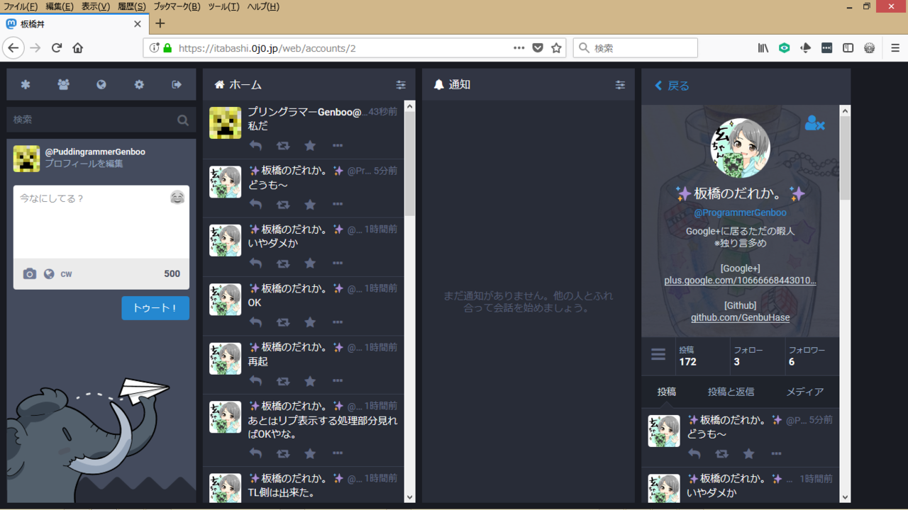
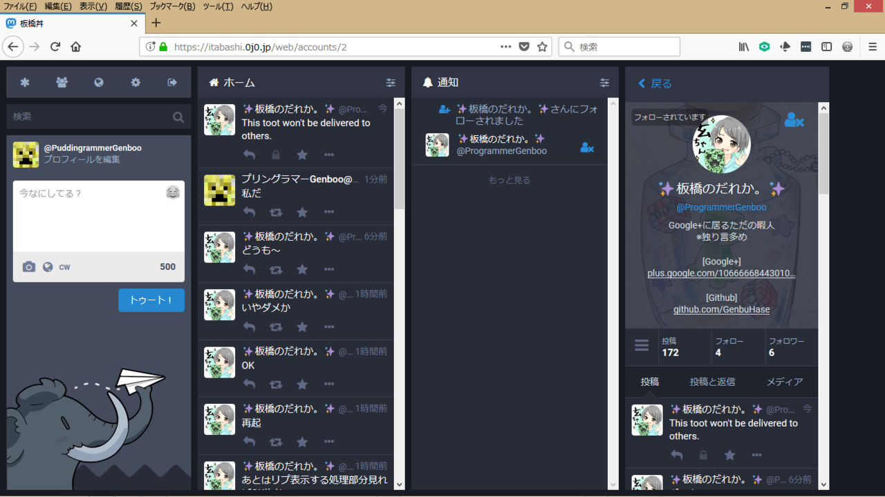

【Mastodon】非公開トゥートの挙動を変えてみた話。
どうも、みなさんこんにちは。Genbooです。
今日から春休みに入り、時間的にも余裕が出てきました。
時間にモチベも重なって、久しぶりにプログラミングにのめり込めてる気がします。
さて、最近ですがMastodonというSNSに没頭しています。
それも世界1位のTPD(Toot per Days, 要するに1日の平均投稿率)ユーザーにも数回なっています……ｗ
つまり廃人ですね(白目)
そこで最近はMastodon関連のツールを製作することがかなり増えてきました。
それにとどまらず、Mastodon自体のソースにも手を出し始め……。
という事で改善してみた機能が非公開トゥートになります。
また、開発にあたって参考にさせて頂きました！！ありがとうございます！！🙏🙏🙏
実際の挙動
元来Mastodonには非公開トゥートの機能が実装されています。
しかし十分に満足できる挙動[表1]ではなく、また不便なシチュエーションも多々出てきたため
『じゃあいっちょ変えてみっか！！』の一声で開発を始めました。
[表1]
| Mastodon | 理想 |
|---|
| 自分のフォロワーに公開 |
自分がフォローしているユーザーに公開 |
|  |
 |
改善された非公開トゥートのコードはGithubに上げてあります。
Rubyに関しては初心者どころか全くの未経験者なので、基礎的な部分の理解すらままならずにコミットしてしまったりでコミット数が多くなっていますが、修正箇所はかなり少なかったです。
以下にて行程ごとに分けて解説をしていきます💪💪
投稿処理を探し当てる
まずサーバー側の処理、という事でRubyのコードを漁っていきます。
app/controller直下にAPI群があったので、漁っていったところstatuses_controller.rbがありました。
このコードを覗いてみると、createメソッドでPostStatusServiceが呼ばれています。
つまり、PostStatusServiceに処理が書かれているはずです。
……このように芋づる式にコードを辿っていきます。
辿った結果、投稿の配信処理は同インスタンスに対してはapp/services/fan_out_on_write_service.rb、
他インスタンスに対してはapp/workers/activitypub/distribution_worker.rbということが分かりました！！
app/services/fan_out_on_write_service.rb